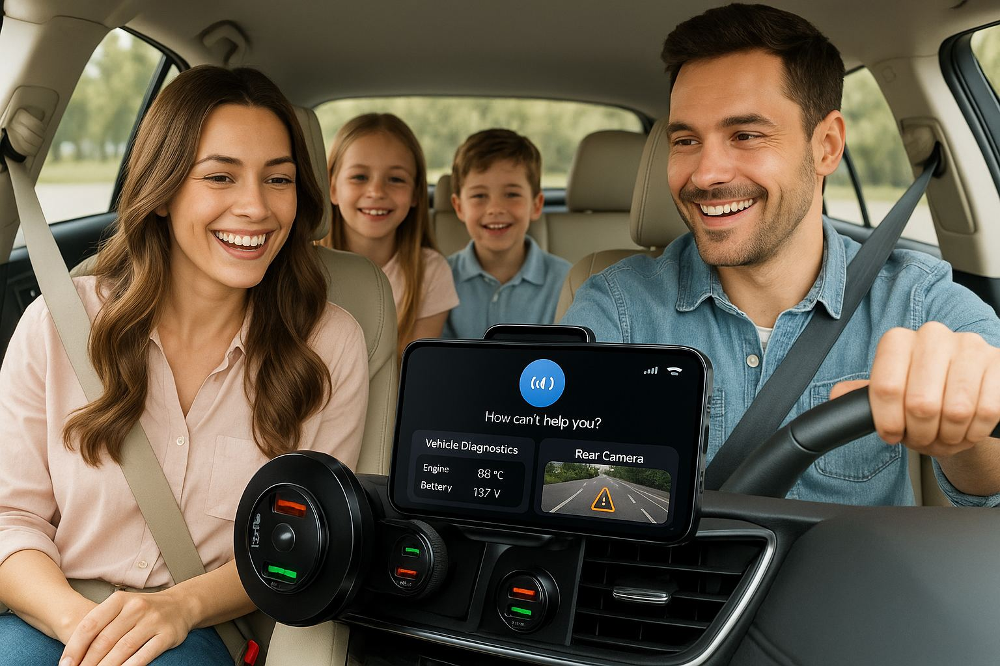

Komplexní bezpečnost rodiny s chytrým hlídáním a důrazem na soukromí
Vše níže je implementováno a ověřeno automatickými testy v CI nebo v simulaci. Ověření na stole, na hardwaru a ve voze teprve probíhá.
Otáčky, teplota chladicí kapaliny, napětí baterie a stav zapalování z digitálního dvojčete ELM327 a pasivního záznamu CAN na ESP32.
Diagnostický most VAG/Audi, který pouze čte. MIA ve výchozím stavu na sběrnici vozidla nezapisuje.
Rozpoznávání SPZ v aplikaci pro Android a kontrola dálniční známky.
Zpracování hlasových příkazů na Pi a mluvená zpětná vazba v aplikaci pro Android.
Párování přes BLE, živá karta telemetrie, záznam z kamery a místní pravidla.
REST a WebSocket API, zprávy přes ZeroMQ a služby systemd, se simulací tam, kde hardware chybí.
Kam produkt směřuje. Tyto scénáře zatím nejsou hotové ani ověřené.
Provozuje API, zprávy a AI služby přímo v autě.
Poslouchají OBD-II a CAN a obsluhují místní vstupy a výstupy.
Přehled, spojení přes BLE, rozpoznávání SPZ a kamera v telefonu řidiče.
Požadavky, návrhová rozhodnutí a záznamy ověření jsou veřejně na GitHubu.
MIA hledá pilotní uživatele a partnery. Ceník zatím nemáme. Napište nám, co potřebujete, a domluvíme se, co dává smysl.